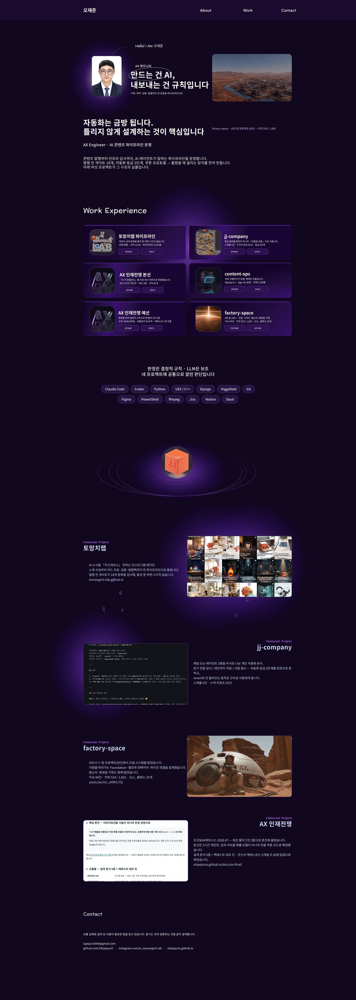

오재준 — AX Engineer · AI 콘텐츠 파이프라인 운영
만드는 건 AI, 내보내는 건 규칙입니다.
아래 한 장이 회사 전체입니다. 대표실(JJ)에서 지시가 작업장으로 가고, 작업장은 worktree 와 PR 로만 main 에 닿고, 운영 서버는 그것을 pull 로만 받습니다. 운영 서버 안에서 스케줄러가 래퍼를 띄우고, 래퍼가 동기화·권한 프로브를 지나 에이전트 다섯(운영·마케팅·영업·감리·헤르메스)을 부르며, 결과는 STATUS 줄이 붙은 리포트로 쌓입니다. 발행은 채팅이 아니라 승인 파일이 서명이고, 인스타그램은 사람이 올리는 C등급으로 따로 그렸습니다. 경계 4개(작업장 · 운영 서버 · 에이전트 · 출장지)와 카드 3장(자동화 3등급 · 정본은 실물 · 경계 규칙)이 정관 §0~§6 을 그대로 옮긴 것입니다.
같은 회사를 사무실 한 장으로도 봅니다. 위 도식의 에이전트 아홉이 각자 책상에 앉아 있고, 상태는 말이 아니라 실물에서 읽습니다 — 클로드·코덱스·그록의 세션 기록 파일, 헤르메스의 상태 DB, 스케줄 로그의 STATUS 줄, 오늘 생긴 리포트 파일. 리포트가 생기면 그 캐릭터가 일어나 대표 자리까지 걸어가 건네고, 상단 수치 띠(발행 편·게시물·게이트 절·열린 PR·스킬 판본)와 오른쪽 승인 대기 큐는 발행로그·GitHub·리포트 폴더를 읽어 30초마다 갱신됩니다. 캐릭터를 누르면 그 에이전트가 일하는 터미널로 넘어갑니다.
sagun 과 job-scout 가 리포트를 들고 대표 자리로 걸어가고, 잠든 캐릭터는 그날 아직 안 돈 에이전트입니다. 화면 아래로는 회차 격자·주별 발행·게이트 이력·headroom 절감 표가 이어집니다.지면 버전 보기 (이미지 4쪽)

그 규칙이 정말 구조인지는 가짜 간선 테스트로 쟀습니다 — 제작 파이프라인의 화살표 12개 중
«앞 단계 산출물을 실제로 읽는가»로 가르니 절반이 가짜 간선이었고, 병렬화로 얻는 절감은 편당 1% 미만(자동화 구간 4~7분 / 편 스팬 2.8~5.8시간)이었습니다.
대신 그 테스트가 게이트가 못 보던 수동 cp 간선(킷 캡처 → 영상)을 드러냈고, 그 간선은 검사를 붙이는 대신
공용 모듈 하나(kitchain.py)로 구조를 닫아 없앴습니다. 검사는 마지막 수단입니다 — 기본값·구조 → 생성 단계 → 검사 → 사람, 이 순서가 정관 조항입니다.
소개
콘텐츠 발행부터 인프라 감사까지, AI 에이전트가 일하는 파이프라인을 운영합니다. 발행 전 게이트 25개 항목, 자율성 사다리 5단과 등급 3단계, 노드 계약 스키마 — 틀렸을 때 걸리는 장치를 먼저 만듭니다. 아래 여섯 프로젝트가 그 구조의 실물입니다.
바로 열어볼 수 있는 것
위 지면에 적힌 프로젝트의 저장소와 문서입니다. 모두 접근 확인을 마쳤습니다.
토망치랩 파이프라인
jj-company
이 구조를 부르는 말
각 항목의 수치는 전부 실물에서 센 값입니다.
이 페이지는 검색에 노출되지 않는 비공개 경로입니다(robots.txt 제외 대상).
지면에 적은 수치는 전부 실물에서 센 값이고, 확인하지 못한 것은 적지 않았습니다. 최신값은 본문과 각 문서 페이지에 있습니다.
ojaejun1995@gmail.com · github.com/OhjaejunO · ohjaejuno.github.io